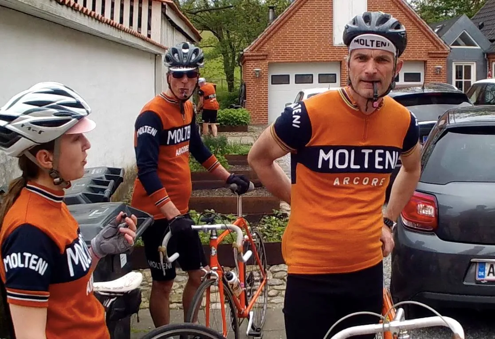
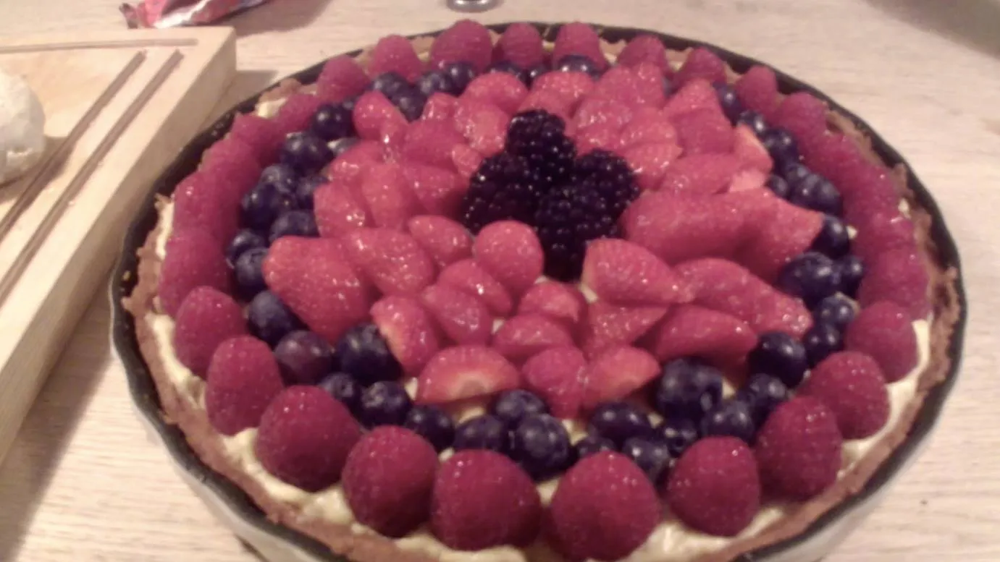
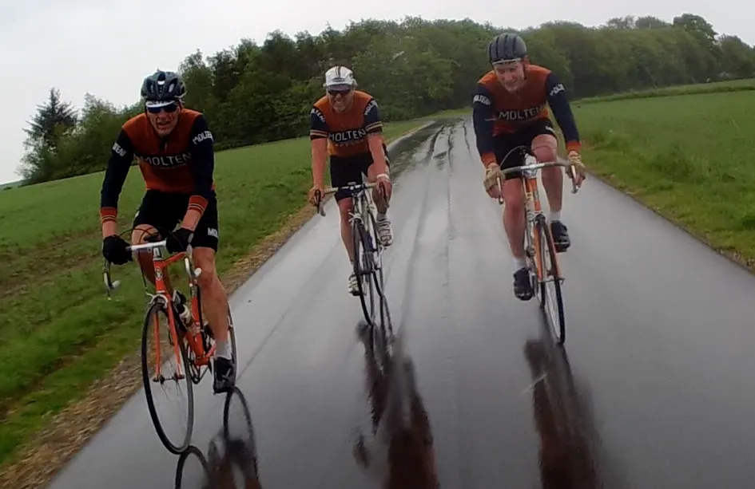
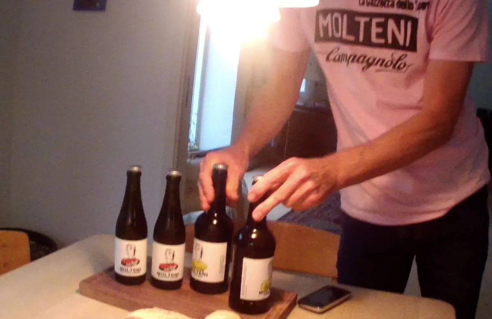
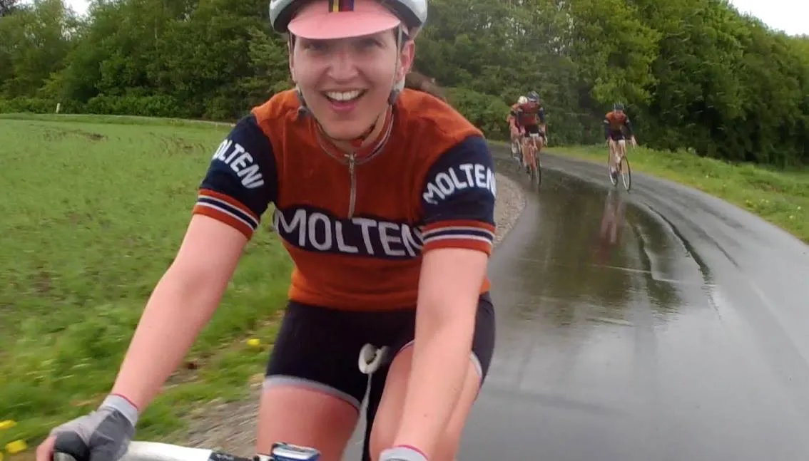
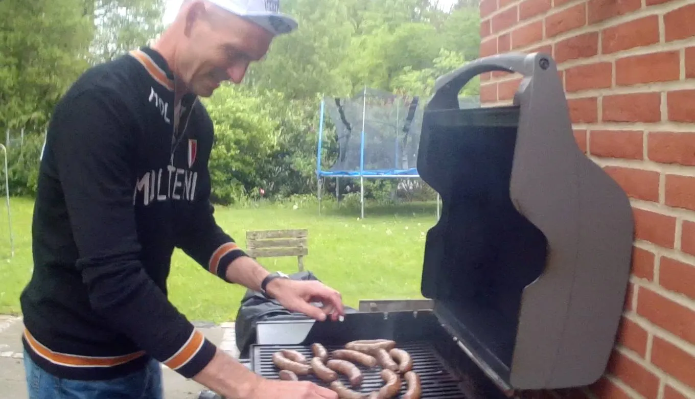
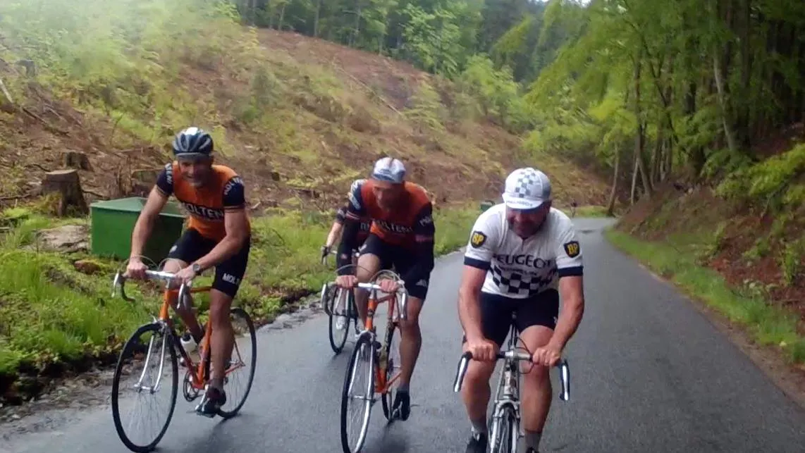
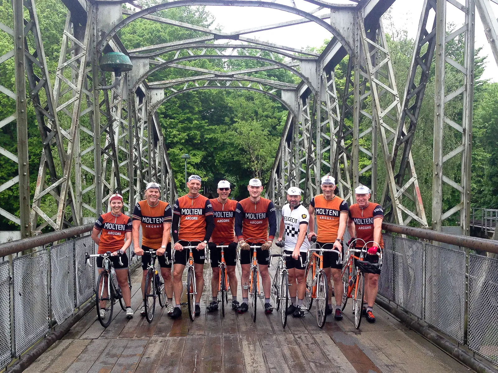

Træningssamling i sommeregn

Squadra Molteni skulle have kørt Viborg Pavé Cruterium lørdag 21. maj, men løbet blev aflyst – næsten før det blev annonceret! I stedet blev holdet inviteret hjem til Cassa “Wunderbein”, der ligger smukt på en sydvendt skråninger ned mod Ravnsø.
Grane “Wunderbein” havde planlagt en super lækker “Giro d’Himmelbjerget” – en tur rundt om Silkeborgsøerne, med indlagte “bjerge” og byskiltespurter.
Som sædvanlig havde Squadra Molteni godt selvskab af Peugeot Re-Cycled’s Morten Mejsen, som ellers er en hård hund i skiltespurterne (og vist nok vandt den interne konkurrence ved årets første træningssamling).
















Regn, regn og regn
Efter en træningstur på et par timer, hvor det stort set regnede hele vejen (selvom yr.no havde lovet noget andet) var der hjemmelavede “Molteni Alimentari” pølser, brød og salat i Cassa “Wunderbein”.
En ubeskrivelig lækker oplevelse. Og selvfølgelig blev der serveret Eigil Leegaards fantastiske “Molteni Tour Ale” og “Molteni Belgian Lager” til.
Og som som kronen på værket, havde Maria “torta mama” lavet smukke og vildt velsmagende frugttærter.
Flere af os kneb os i armen. Vi var dér – det var ikke en drøm.
Tak til Grane for gæstfrihed og lækker med.
Tak til Eigil for fantastisk øl – og tak til Maria for udsøgt dessert.
Forza Molteni